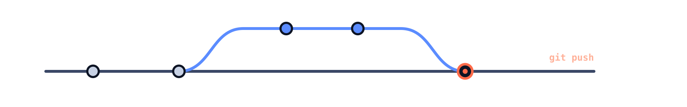

Keep your project history, work with your team, and show what you have built.

MECHATRONICS · 45 MINUTES
Keep your project history, work with your team, and show what you have built.
Arif Solmaz
İSTÜN Mechatronics Engineering

LECTURE ROUTE
One robot project, four stops.
32 main slides · 12 reference slides · One project throughout
01 · BASICS
Is robot_final_SON.ino really the final version?

We keep a history of changes instead of putting version names into filenames.
01 · BASICS
Git keeps history. GitHub supports collaboration around that history.
Manages commits, branches, and local history. Many operations work without an internet connection.
Hosts repositories and brings issues, pull requests, and review tools together.
Git also works with GitLab and other Git servers.
01 · BASICS
Code, circuit diagrams, reports, and documentation belong to the same project.

Repository · robot.ino + README.md + circuit diagram + recorded history
01 · BASICS
“Increase the IR sensor threshold” describes a change and its purpose.
Save ≠ commit ≠ push
01 · BASICS
A visitor should understand the project in a few sentences.
# My Robot Project
An Arduino robot that follows a line using IR sensors.
## Hardware
Arduino, IR sensors, motor driver, and motors.
## Running the project
Follow the wiring diagram and the comments in robot.ino.Purpose · hardware · setup · photograph or diagram
01 · BASICS
Visibility and permission to write are separate decisions.
Anyone can view and clone it. Writing to the original repository requires permission.
Access is limited to authorized people. Team members receive suitable permissions.
Passwords, access keys, and personal data do not belong in project files.
02 · THE PATH OF A CHANGE
History gives a concrete answer to “What changed?”

Who, when, and in which commit? · History contains committed changes.
02 · THE PATH OF A CHANGE
A diff shows the changes between two states.
robot.ino
- const int ESIK = 500;
+ const int ESIK = 900;− earlier line · + new line · ESIK: example threshold for an IR sensor reading
02 · THE PATH OF A CHANGE
Edit → stage → record → share

Add stages changes. Commit records them locally. Push sends them. Pull brings remote updates in.
02 · THE PATH OF A CHANGE
Bring an existing repository to your computer, with its files and history.
git clone <repository-url>
cd robot-projemPublic repositories can be read over HTTPS; private ones require access. A ZIP has no Git history.
02 · THE PATH OF A CHANGE
We added the line sensors’ purpose to the README and saved the file.
README.md
## Sensors
IR sensors detect the line.
The wiring is shown in devre-semasi.png.
# Save the file → then:
git statusWithout an edit, add and commit do not create a new change.
02 · THE PATH OF A CHANGE
Choose the scope of a commit deliberately.
git add README.md
git diff --cachedAdd stages the file’s current state. Later edits may need another add.
02 · THE PATH OF A CHANGE
The message explains what the change accomplishes.
git commit -m "Document IR sensor wiring in README"
git log --onelineThis commit is on your computer. Sending it to GitHub is the next step.
02 · THE PATH OF A CHANGE
Local commits become visible remotely after a successful push.
git pushWrite permission and authentication are required. Your GitHub password is not a Git HTTPS password.
02 · THE PATH OF A CHANGE
The shared history and the local copy come together again.
git status
git pull --ff-onlyThis example proceeds if the local branch has no separate commits. Diverged histories need a chosen integration method.
03 · TEAMWORK
“Investigate the IR sensor threshold” becomes a shared work item.

Title + observed behavior + expected outcome + owner
03 · TEAMWORK
Different changes can grow from the same starting point.

A branch is a name pointing to a commit, rather than a physical copy of every file.
03 · TEAMWORK
The project’s needs determine its branch workflow.
main · the team’s accepted current work.
feature/sensor-esigi · a specific change, review, and merge.
dev and staging are not required for every project. Read CONTRIBUTING to find the target branch.
03 · TEAMWORK
“Shall we bring this branch’s change into main?”
Source: feature/sensor-esigi → Target: main
Title: Increase the IR sensor threshold
Why: The robot was losing the line in some conditions.
Change: ESIK, 500 → 900.
Validation: State the observations and tests performed here.A PR explains what changed, why, and how it was checked.
03 · TEAMWORK
A small number change can have a large effect on the robot’s behavior.
Review keeps the decision and its reasoning with the project.
03 · TEAMWORK
A change accepted on GitHub must also be brought into local main.
git switch main
git pull --ff-onlyBefore deleting a branch, check that its change is present in the target branch.
03 · TEAMWORK
Two branches changed the same line in different ways.
robot.ino
<<<<<<< HEAD
const int ESIK = 900;
=======
const int ESIK = 700;
>>>>>>> mainHEAD: current branch · main: incoming branch · ESIK: IR sensor reading threshold
03 · TEAMWORK
Decide on the correct behavior, then remove the markers.
git add robot.ino
git commit -m "Resolve the IR sensor threshold conflict"This is a merge example; the command to continue depends on the operation.
04 · SHARING AND VISIBILITY
When adding an HC-SR04 distance sensor, the first search result is not enough.
A star signals interest or a saved repository; it does not guarantee quality or usage.
04 · SHARING AND VISIBILITY
Being able to see code does not mean being allowed to use it for every purpose.
For open-source code, consider both technical suitability and permission to use it.
04 · SHARING AND VISIBILITY
Work in your own copy and propose a change to the original project.
You can clone a public repository directly. A fork gives you your own remote copy to work in.
04 · SHARING AND VISIBILITY
A few clearly documented projects can say more than a contribution count.
Purpose, your contribution, hardware, results, and operating limits.
Featured repositories, clear READMEs, and working project links.
The contribution graph shows activity GitHub counts, rather than every workday or all your effort.
04 · SHARING AND VISIBILITY
GitHub Education offers tools and learning opportunities for verified students.
Current terms and offers: education.github.com/pack
RECAP
Problem → issue → branch → change → commit → push → PR → review → merge → pull
Resources: GitHub Docs · Pro Git · GitHub Skills
CLOSING
Where is the change? Who can see it? How does it reach the team?
Git · GitHub · repository · commit · branch · issue · pull request
APPENDIX 01 · REFERENCE
Use the official installation route for your operating system.
git --versionGit for Windows, with Git Bash or a suitable terminal.
A package or installation method suited to the operating system.
Version numbers vary. Current instructions: git-scm.com/install
APPENDIX 02 · REFERENCE
Configure the name and email that will appear in commits.
git config --global user.name "Elif Örnek"
git config --global user.email "elif@example.com"
git config --global init.defaultBranch mainThe name and email are examples. These settings do not authenticate you to GitHub.
APPENDIX 03 · REFERENCE
The same Git operation can be done in a terminal or a graphical interface.
Commands and options are explicit, making steps easy to share.
Files, diffs, Source Control, and an integrated terminal in one window.
Open the project with Open Folder; show the terminal with View → Terminal.
APPENDIX 04 · REFERENCE
The history database and tracking preferences are stored separately.
robot-projem/
.git/
.gitignore
README.md
robot.ino
# Example .gitignore
build/
.envDo not edit .git by hand. .gitignore does not remove tracked files from history.
APPENDIX 05 · REFERENCE
Add the public key to GitHub; keep the private key to yourself.
ssh-keygen -t ed25519 -C "elif@example.com"
# File to add to GitHub:
~/.ssh/id_ed25519.pub
# Private key: do not share
~/.ssh/id_ed25519A passphrase adds protection. Do not overwrite an existing key.
APPENDIX 06 · REFERENCE
Agent setup depends on the operating system.
# Bash / Git Bash example
eval "$(ssh-agent -s)"
ssh-add ~/.ssh/id_ed25519
# Check the GitHub connection
ssh -T git@github.commacOS Keychain and Windows OpenSSH steps may differ; follow the official instructions.
APPENDIX 07 · REFERENCE
This example assumes an empty remote repository on GitHub.
cd robot-projem
git init -b main
git add README.md robot.ino
git commit -m "Initial robot project commit"
git remote add origin <repository-url>
git remote -vREADME.md and robot.ino already exist. If the remote has initial commits, clone may be simpler.
APPENDIX 08 · REFERENCE
-u records which remote branch the local branch tracks.
git push -u origin main
# After setting up tracking:
git push
git pull --ff-onlyCheck the branch name with git branch. Commands must use the project’s actual branch name.
APPENDIX 09 · REFERENCE
Make the before and after sides of a comparison explicit.
git branch
git switch -c feature/sensor-esigi
# Compare branch tips: main → feature
git diff main feature/sensor-esigi -- robot.ino
# Feature changes from the common starting point:
git diff main...feature/sensor-esigiTab completion depends on the shell. The typed prefix must match the start of the branch name.
APPENDIX 10 · REFERENCE
Files, the staging area, and history require different operations.
git restore --staged README.md The edit stays in the working file.
git revert <commit> Creates a new commit that reverses an earlier effect.
git reset HEAD~1 moves the branch to the previous commit; the default mixed mode preserves working files.
APPENDIX 11 · REFERENCE
A hard reset can discard uncommitted work.
# Only after checking the effects:
git reset --hard <commit>
# Inspect local reference movements:
git reflogReflog may help find earlier commits; it cannot guarantee recovery of all unrecorded work.
APPENDIX 12 · REFERENCE
Commands are shorthand for the concepts in the main lecture.
git clone <repository-url>
# Edit and save the file
git status
git add <file>
git commit -m "What changed and why?"
git push
# Get the team's updates
git pull --ff-only
# Create a task branch
git switch -c feature/<task>Replace placeholders with real values. Installation, identity, and permissions must be in place.